Castles of Northern Croatia
A digital home for the castles, manors, and ruins of three Croatian counties — turning scattered heritage sites into one connected tourist product.
Summary
Krapina-Zagorje, Varaždin, and Međimurje counties hold the densest concentration of historic castles, manors, and ruins in Croatia — but most sit outside any real tourist offer, promoted separately with no unified way to discover them. This platform brings heritage sites from all three counties into one place, letting a visitor discover a castle, plan a route between several, and track their own progress exploring the region.
The problem
- Heritage sites promoted separately by county, with no unified way to discover them
- No tool for planning a visit across multiple castles, manors, or ruins in one trip
- Limited incentive for tourists to explore beyond the one or two best-known landmarks
turn dozens of scattered heritage sites, spread across three counties, into one destination worth staying longer for?
Visual direction
The warm gold palette and crest-style logo were chosen to evoke heritage and nobility without tipping into kitsch — a tone that feels historic on a homepage banner and still calm and legible inside a dashboard full of routes, badges, and lists.
My role
I worked on this as part of a three-person student team. The Varaždin County Tourist Board was our main stakeholder throughout, alongside a product manager and our university professor, who both mentored us in every meeting. We ran the research from scratch as a team — interviews, competitive analysis, information architecture — then moved together through wireframes into final UI.
Designing the discovery experience
- A single map-based explorer with filters for building type, accessibility, and nearby activities — so a visitor can plan around what they can actually do, not just what exists
- A route builder that lets people string multiple sites into one trip, with the map handling directions between stops automatically
- Wishlisting and a "visited" status on every site, so the platform doubles as a personal travel log, not just a directory
- A badge system (Beginner, Noble, Count, King of Castles...) that turns exploring the region into something with visible progress — encouraging people to venture beyond the most famous stop
- Events tied to specific castles, so a visit can be timed around something happening there
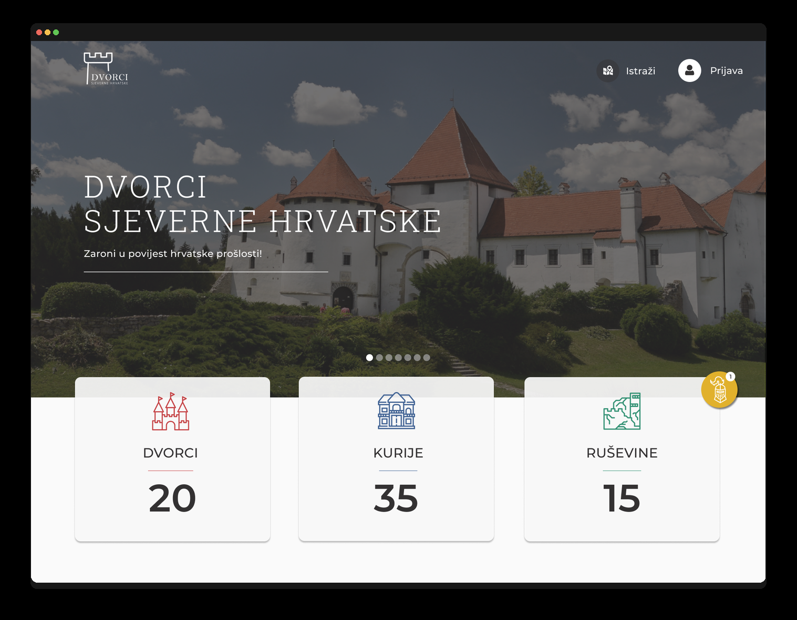
Homepage
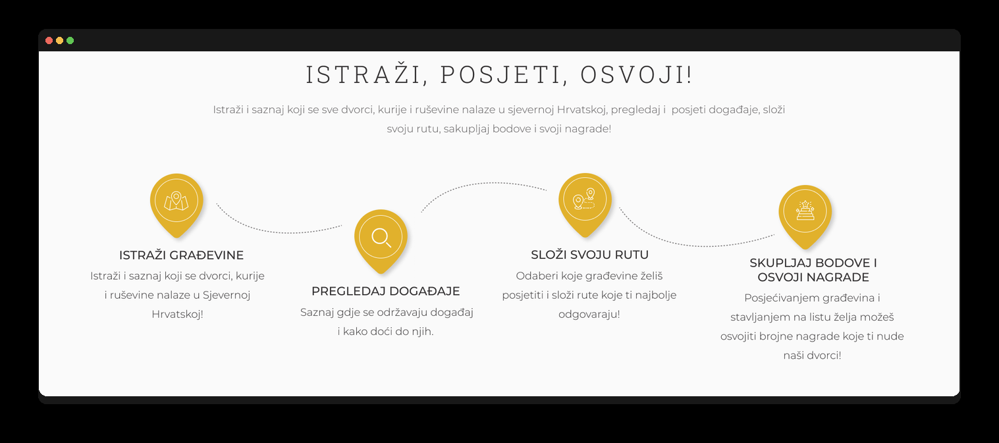
How it works
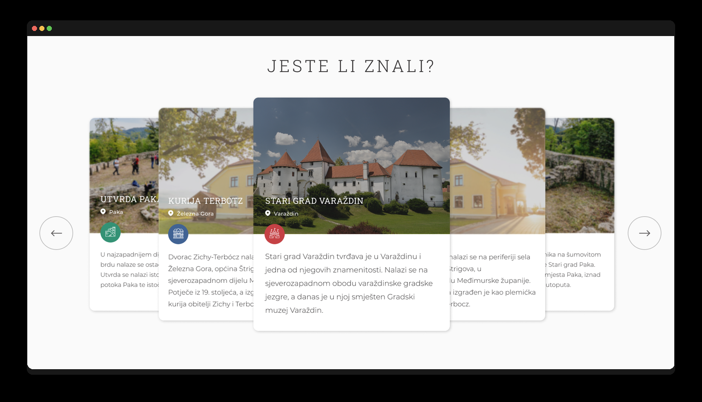
Featured sites
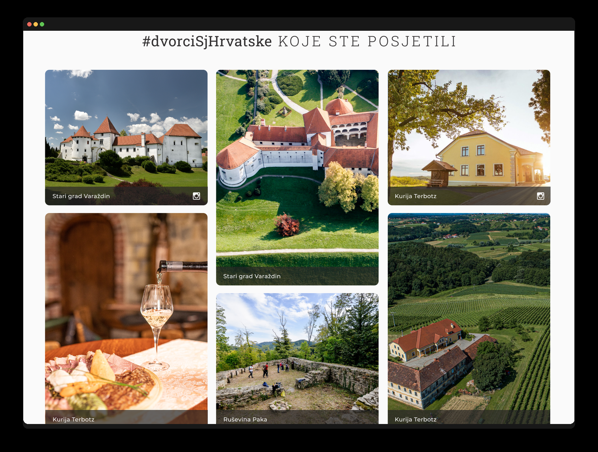
Community photos
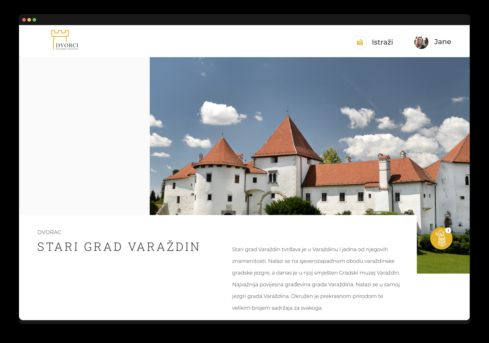
Site detail — intro
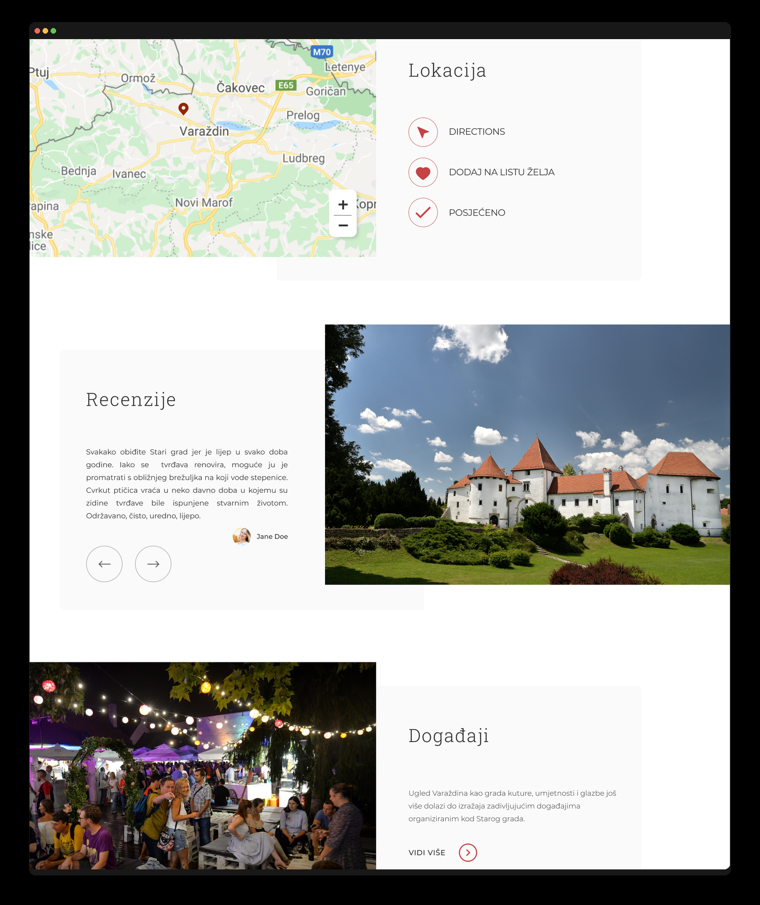
Location, reviews & events
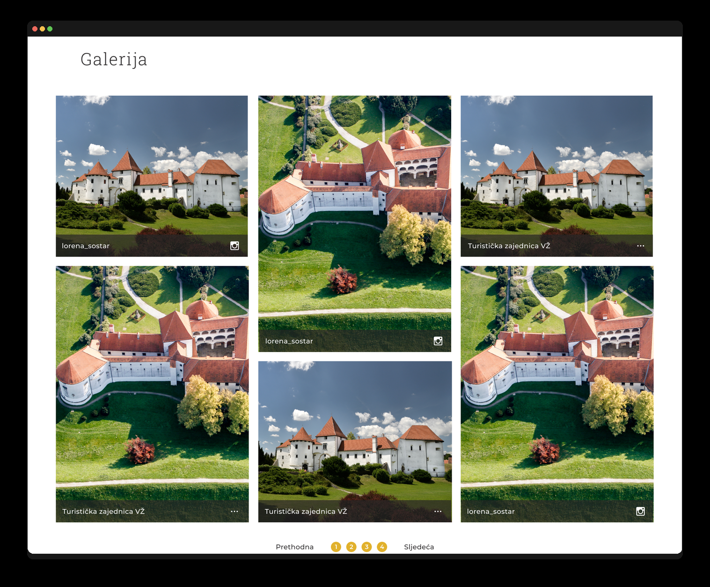
Site gallery
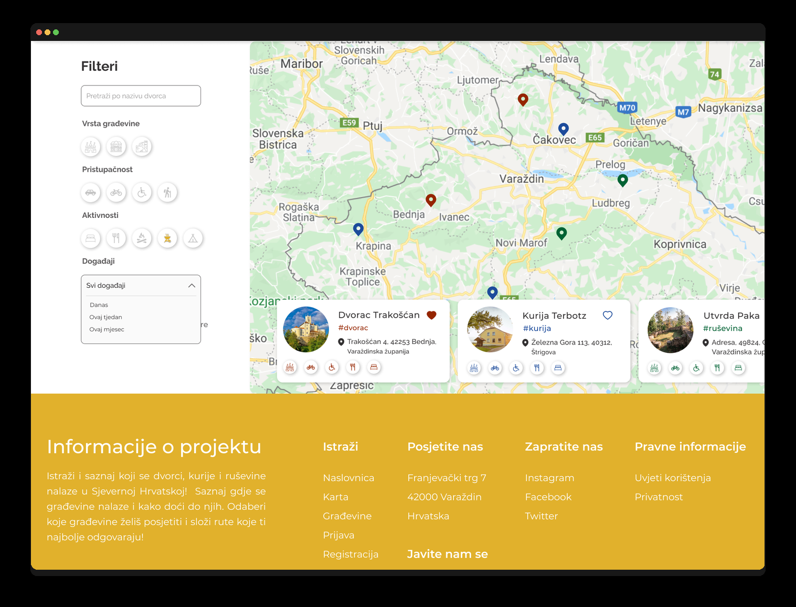
Filters & map pins
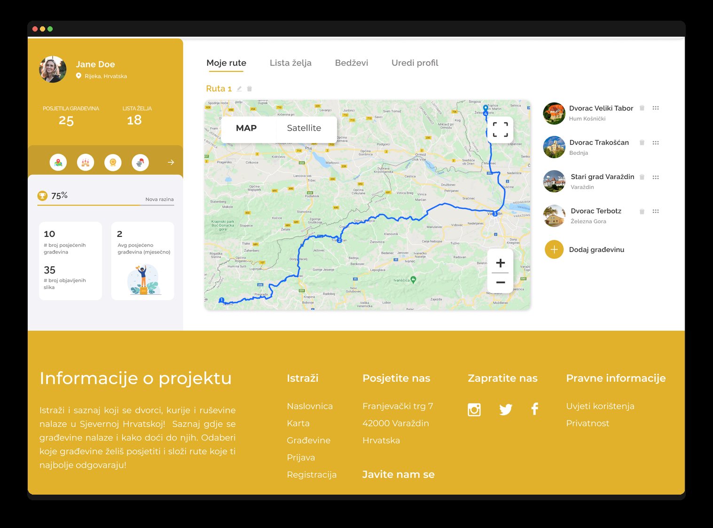
Route builder
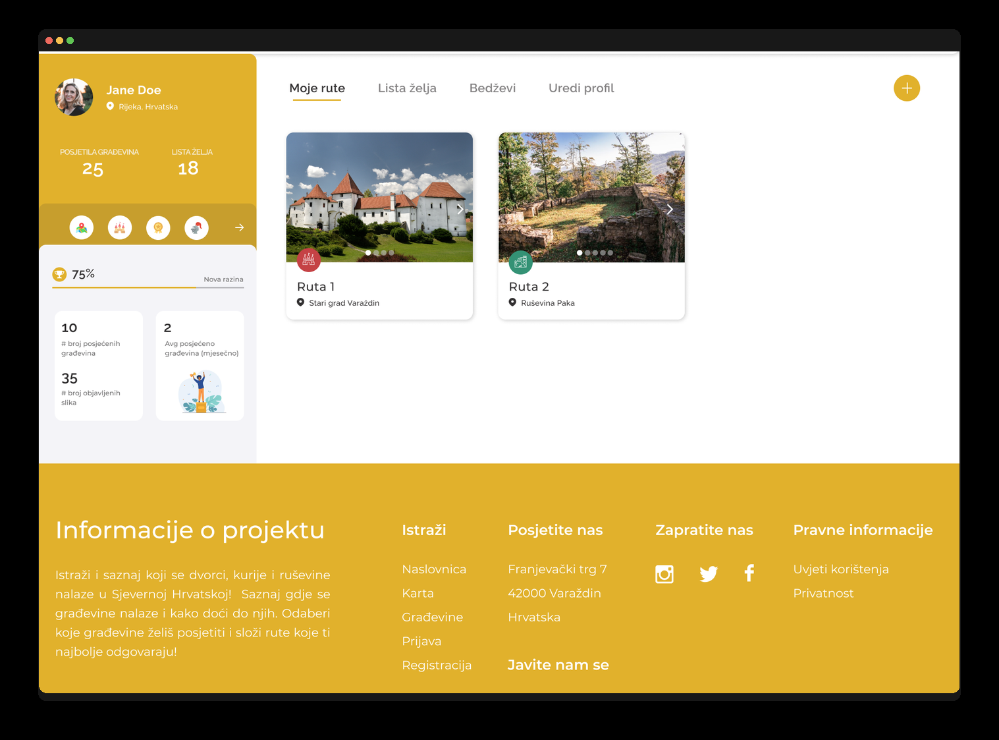
My routes
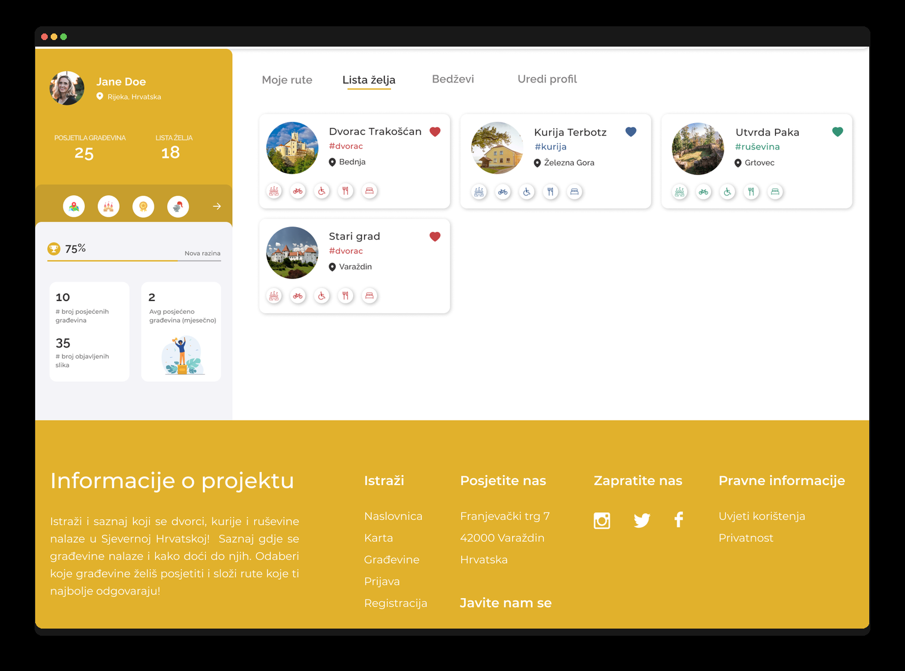
Wishlist
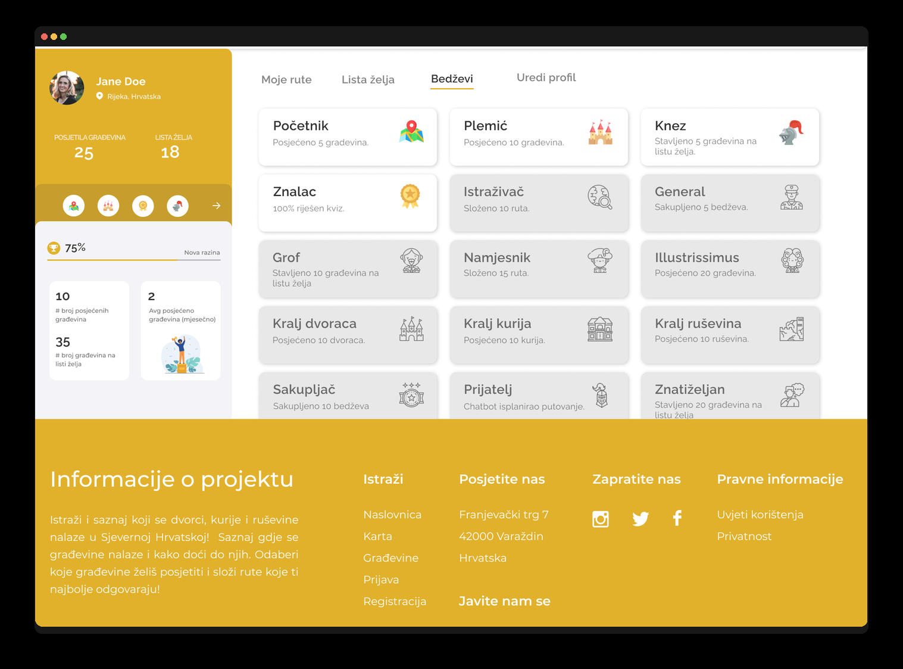
Badges
Outcome
The result reframes three counties' worth of separate heritage sites as one connected destination: a visitor can discover a castle, see what's nearby, build a route between several sites, and track their own progress exploring the region — all inside a single, cohesive platform.